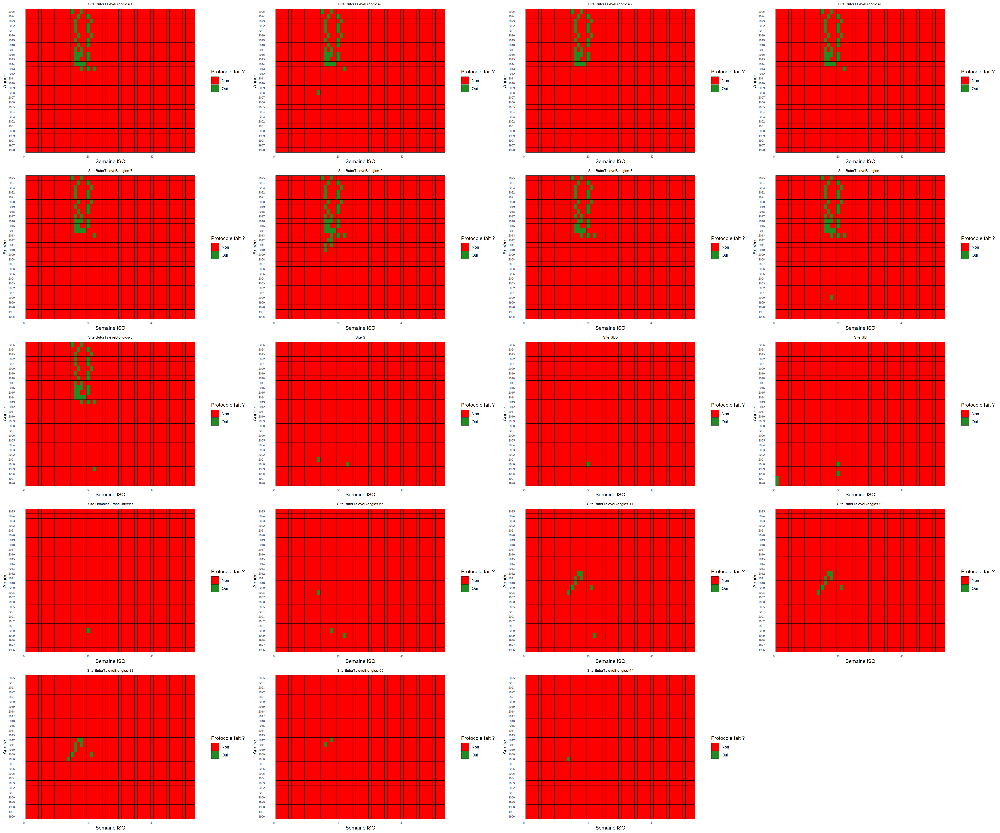
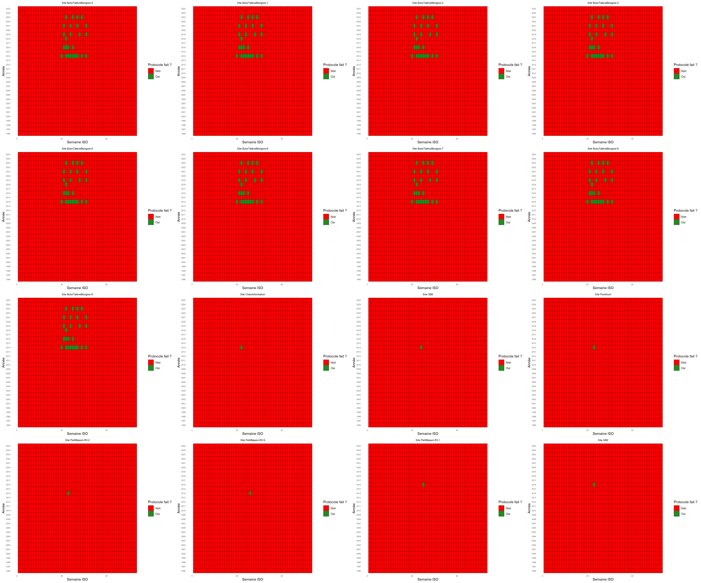
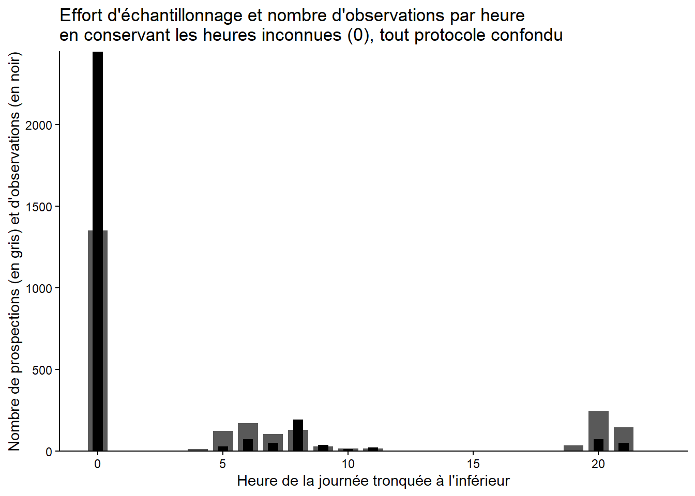
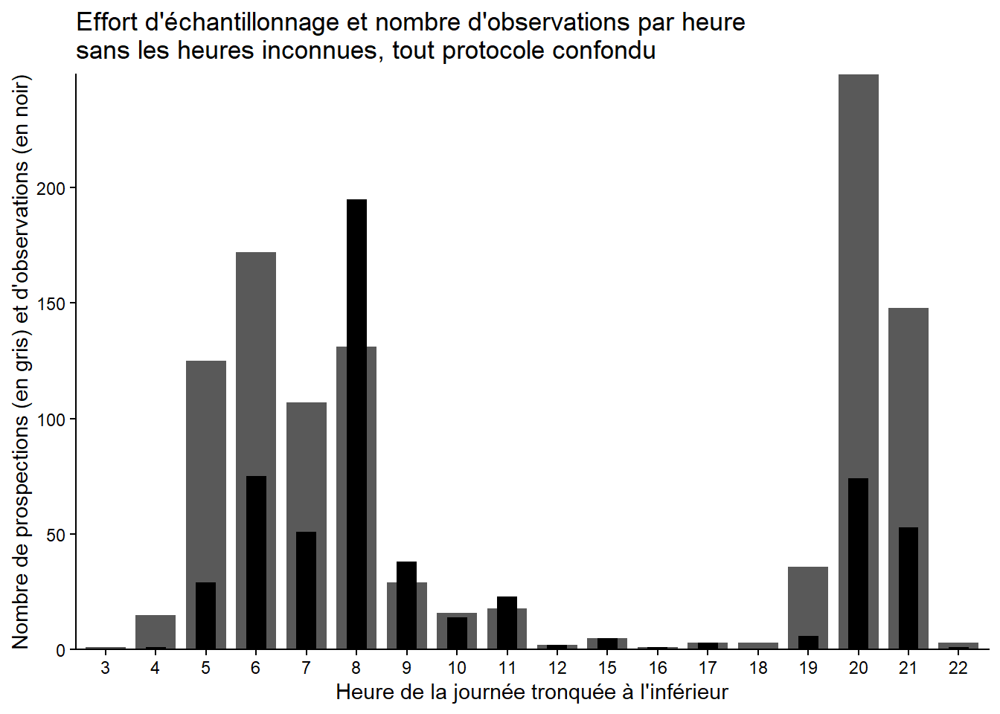
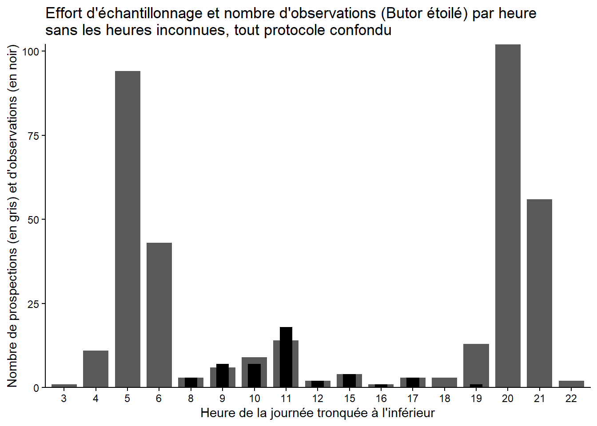
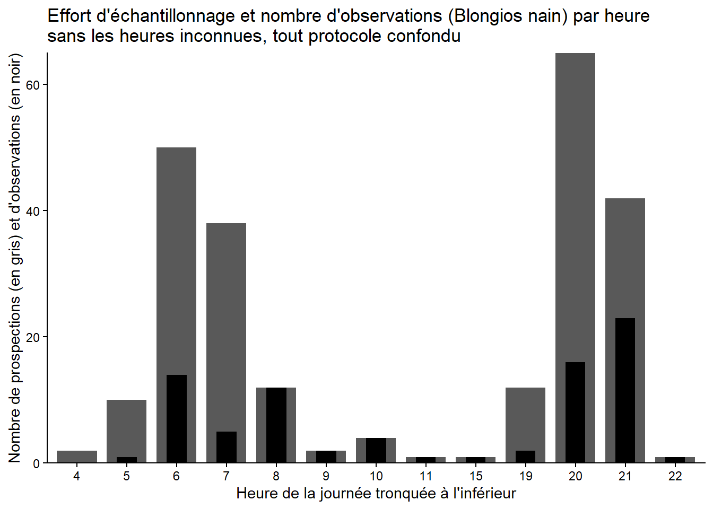
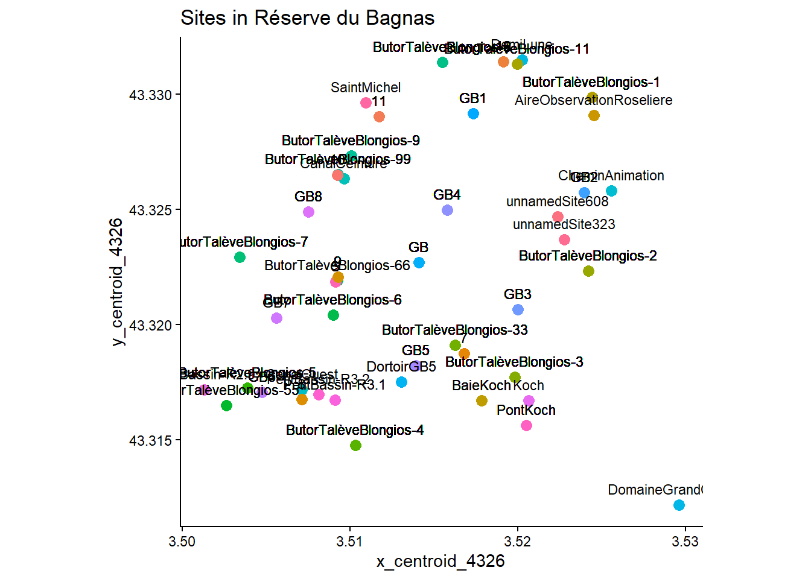
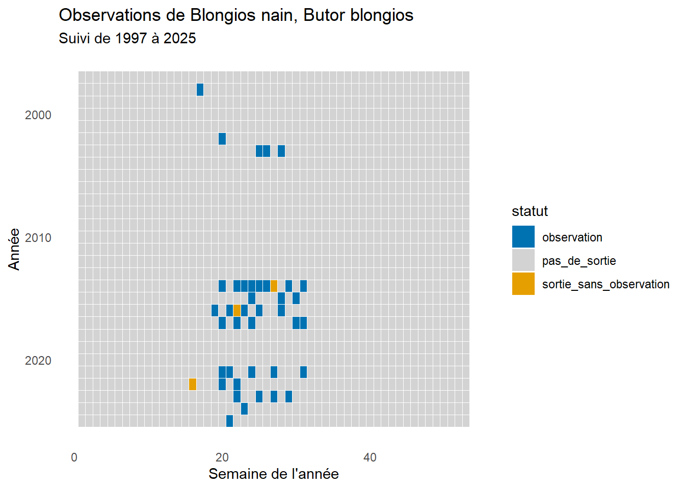
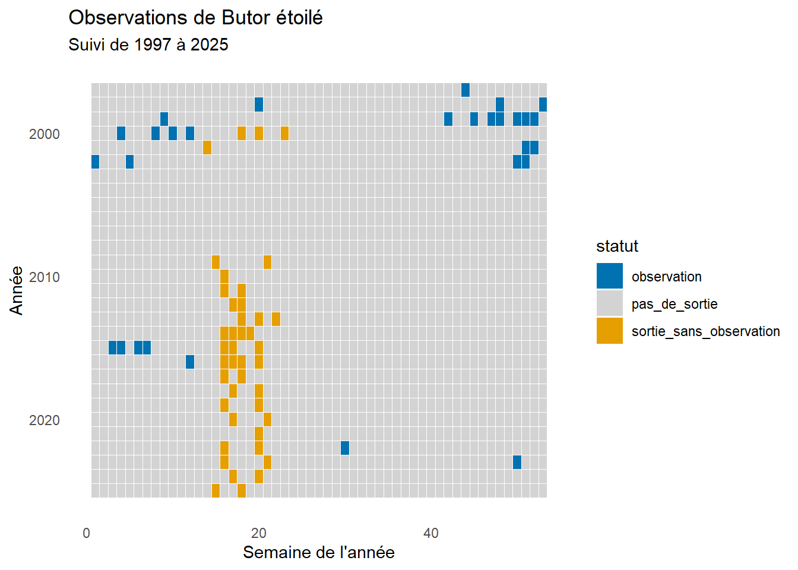
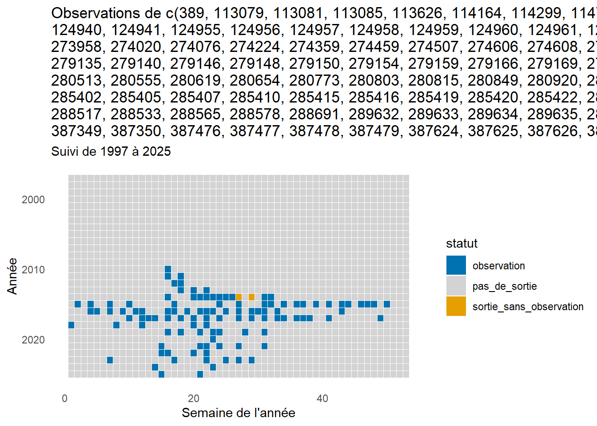

Gayot_oiseaux
Test
Les packages nécessaires
1. Nettoyage des données
Nous allons mettre au propre le tableau 1 et le tableau 2 afin d’identifier les différences, les corriger et constituer un tableau final regroupant les trois espèces.
setwd("C:/Users/lucie/Desktop/Projet_Biodiversite/oiseaux_bagnas/data/raw")
raw_data<- read_excel("synthese_observations_2025-09-09T13_30_50.994Z.xlsx") 1.2Mise au propre du tableau
Nous conservons uniquement les colonnes pertinentes pour la suite de l’analyse, en supprimant les colonnes vides ainsi que celles dont l’information est redondante, notamment les noms latins.
1.3 Import et sélection du second tableau brut
setwd("C:/Users/lucie/Desktop/Projet_Biodiversite/oiseaux_bagnas/data/raw")
# read_delim + encoding Latin1 = corrige les accents
raw_data_2 <- read_delim(
"synthese_observations_2025-11-24T07_38_00.302Z (2).csv",
delim = ";",
locale = locale(encoding = "Latin1", decimal_mark = ".")
)
# On sélectionne seulement les colonnes nécessaires et dans le même ordre
process_data_2 <- raw_data_2 %>%
select(id_synthese, date_debut, date_fin, heure_debut, heure_fin,
nom_vernaculaire, nombre_min, observateurs, determinateur,
x_centroid_4326, y_centroid_4326,
nom_lieu, champs_additionnels)
process_data_2 <- process_data_2 %>%
mutate(
x_centroid_4326 = as.character(x_centroid_4326),
y_centroid_4326 = as.character(y_centroid_4326)
)
process_data_1<- process_data_1 %>%
mutate(
x_centroid_4326 = round(as.numeric(x_centroid_4326), 6),
y_centroid_4326 = round(as.numeric(y_centroid_4326), 6)
)
process_data_2 <- process_data_2 %>%
mutate(
x_centroid_4326 = round(as.numeric(x_centroid_4326), 6),
y_centroid_4326 = round(as.numeric(y_centroid_4326), 6)
)
# Le fichier brut est en format "dd/mm/YYYY"
# On convertit proprement en Date (format standard YYYY-MM-DD)
process_data_2 <- process_data_2 %>%
mutate( date_debut = as.Date(date_debut, format = "%d/%m/%Y"),
date_fin = as.Date(date_fin, format = "%d/%m/%Y") )
#verification des données soit identiques pour le butor et le taleve
process_data_2 <- process_data_2 %>%
mutate(
heure_debut = as.character(heure_debut),
heure_fin = as.character(heure_fin)
)
# Certaines heures arrivent comme objets POSIX → on convertit en caractère
# Correction de la ligne manquante dans champs_additionnels
# La ligne 132 de process_data_2 avait un NA
# On remplace par la valeur correspondante dans process_data_1 (ligne 720)
process_data_2$champs_additionnels[ process_data_2$id_synthese == 124571 ] <-
process_data_1$champs_additionnels[720]2. Vérification que les données sensibles correspondent
Nous allons vérifier, après modification du type de certaines colonnes, si les jeux de données sont désormais identiques. Cette comparaison sera effectuée espèce par espèce. Lors de la première comparaison du tableau 1 et du tableau 2 avec la fonction all_equal(), nous avons constaté que plusieurs formats différaient (dates, heures, notations scientifiques, etc.). Nous avons également relevé une case vide pour l’individu 132 dans le tableau 2. Après avoir apporté les corrections nécessaires, nous avons vérifié espèce par espèce que l’ensemble des valeurs corresponde.
[1] TRUE
[1] TRUE
3. Ajout de la taleve sultane au tableau final
Nous prenons la nouvelle table qui est identique à l’autre avec une espece supplémentaire
process_data = process_data_2
write_csv(process_data, "C:/Users/lucie/Desktop/Projet_Biodiversite/oiseaux_bagnas/data/pro/process_data.csv")4. Jeux de données nécessaires ( par especes, par protocole….)
process_data <- read_csv("data/pro/process_data.csv")4.1 Par especes
Butor_etoile<-process_data %>% filter( nom_vernaculaire == "Butor étoilé")
Blongios_nain<-process_data %>% filter( nom_vernaculaire == "Blongios nain, Butor blongios")
Taleve_sultane<-process_data %>% filter( nom_vernaculaire == "taleve sultane, Poule sultane, Porphyrion bleu")4.2 Par protocole
suivi<-process_data %>%
filter(
champs_additionnels%in% c(
"{'RELV_NOM': 'SuiviBlongiostaleve'}",
"{'RELV_NOM': 'SuiviButor'}"
)
)
opportuniste <- process_data %>%
filter(
!champs_additionnels %in% c(
"{'RELV_NOM': 'SuiviBlongiostaleve'}",
"{'RELV_NOM': 'SuiviButor'}"
)
)
Protocole_SuiviButor <- process_data %>%
filter(
champs_additionnels == "{'RELV_NOM': 'SuiviButor'}" &
nom_vernaculaire == "Butor étoilé"
)
Protocole_SuiviBlongiosTaleve <- process_data %>%
filter(
champs_additionnels == "{'RELV_NOM': 'SuiviBlongiosTalève'}" &
nom_vernaculaire %in% c(
"Blongios nain, Butor blongios",
"Talève sultane, Poule sultane, Porphyrion bleu"
)
)
Opportuniste_Butor <- process_data %>%
filter(
!champs_additionnels == "{'RELV_NOM': 'SuiviButor'}" &
nom_vernaculaire == "Butor étoilé"
)
Opportuniste_Blongios<- process_data %>%
filter(
!champs_additionnels == "{'RELV_NOM': 'SuiviBlongiostaleve'}" &
nom_vernaculaire == "Blongios nain, Butor blongios"
)
Opportuniste_Taleve<- process_data %>%
filter(
!champs_additionnels == "{'RELV_NOM': 'SuiviBlongiostaleve'}" &
nom_vernaculaire == "taleve sultane, Poule sultane, Porphyrion bleu"
)5. Analyses exploratoires
5.1continuité des protocoles sur les sites
5.1.a Pour le Butor

5.1.b Pour le Blongios et le Taleve

Sites où pas de protocole suivi régulièrement (1 à 2 sorties en tout) :
blongios/taleve : petit_bassin R3.2 petit_bassin R2.9 petit_bassin R3.1 GB6 chemin_animation
butor : GB GB5 s 66 44 55 11 99 33 domaineGrandClavalet
sites avec protocole régulier : - blongios/taleve : début en 2014 - butor : début en 2013
5.2 effort d’observation journalier : toutes sorties (obs ou pas obs)
5.2.a Effort journalier toutes espèces
process_data <- process_data %>%
mutate(
heure_debut = as.POSIXct(heure_debut, format = "%d/%m/%Y %H:%M:%S"),
heure_debut_tronc = hour(heure_debut),
date = as.Date(heure_debut)
)
### Sommer les obs par heure
obs_heure <- process_data %>%
group_by(heure_debut_tronc) %>%
summarize(sum(nombre_min))
obs_heureA tibble: 19 × 2
heure_debut_tronc sum(nombre_min)
### Frequence horaire
freq_heure <- process_data %>% group_by(heure_debut_tronc) %>% summarise(freq = n()) %>% mutate(freq_rel = freq / sum(freq))
### Barplot
ggplot(mapping = aes(x, y)) +
geom_bar(data = data.frame(x = freq_heure$heure_debut_tronc, y = freq_heure$freq), width = 0.8, stat = 'identity') +
geom_bar(data = data.frame(x = freq_heure$heure_debut_tronc, y = obs_heure$`sum(nombre_min)`), width = 0.4, stat = 'identity', fill = 'black') +
theme_classic() + scale_y_continuous(expand = c(0, 0)) + xlab("Heure de la journée tronquée à l'inférieur") + ylab ("Nombre de prospections (en gris) et d'observations (en noir)" ) +
ggtitle("Effort d'échantillonnage et nombre d'observations par heure \nen conservant les heures inconnues (0), tout protocole confondu")
5.2.b Données d’heure sans les 00:00:00 et les absence d’heure
process_data <-process_data %>%
filter(format(heure_debut, "%H:%M:%S") != "00:00:00")
### Extraire l'heure
process_data <- process_data %>%
mutate(
heure_debut_tronc = hour(heure_debut), # heure de la journée (0-23)
date = as.Date(heure_debut)
)
process_data$heure_debut_tronc = as.factor(process_data$heure_debut_tronc)
### Sommer les obs par heure
obs_heure <- process_data %>%
group_by(heure_debut_tronc) %>%
summarize(sum(nombre_min))
obs_heureA tibble: 18 × 2
heure_debut_tronc sum(nombre_min)
### Frequence horaire
freq_heure <- process_data %>% group_by(heure_debut_tronc) %>% summarise(freq = n()) %>% mutate(freq_rel = freq / sum(freq))
### Barplot
ggplot(mapping = aes(x, y)) +
geom_bar(data = data.frame(x = freq_heure$heure_debut_tronc, y = freq_heure$freq), width = 0.8, stat = 'identity') +
geom_bar(data = data.frame(x = freq_heure$heure_debut_tronc, y = obs_heure$`sum(nombre_min)`), width = 0.4, stat = 'identity', fill = 'black') +
theme_classic() + scale_y_continuous(expand = c(0, 0)) + xlab("Heure de la journée tronquée à l'inférieur") + ylab ("Nombre de prospections (en gris) et d'observations (en noir)" ) +
ggtitle("Effort d'échantillonnage et nombre d'observations par heure \nsans les heures inconnues, tout protocole confondu")
5.2.c Effort journalier Butor
Butor_etoile <- Butor_etoile %>%
mutate(heure_debut = as.POSIXct(heure_debut, format = "%d/%m/%Y %H:%M:%S")) %>%
filter(format(heure_debut, "%H:%M:%S") != "00:00:00")
### Extraire l'heure
Butor_etoile <- Butor_etoile %>%
mutate(
heure_debut_tronc = hour(heure_debut), # heure de la journée (0-23)
date = as.Date(heure_debut)
)
Butor_etoile$heure_debut_tronc = as.factor(Butor_etoile$heure_debut_tronc)
### Sommer les obs par heure
obs_heure <- Butor_etoile %>%
group_by(heure_debut_tronc) %>%
summarize(sum(nombre_min))
obs_heureA tibble: 17 × 2
heure_debut_tronc sum(nombre_min)
### Frequence horaire
freq_heure <- Butor_etoile %>% group_by(heure_debut_tronc) %>% summarise(freq = n()) %>% mutate(freq_rel = freq / sum(freq))
### Barplot
ggplot(mapping = aes(x, y)) +
geom_bar(data = data.frame(x = freq_heure$heure_debut_tronc, y = freq_heure$freq), width = 0.8, stat = 'identity') +
geom_bar(data = data.frame(x = freq_heure$heure_debut_tronc, y = obs_heure$`sum(nombre_min)`), width = 0.4, stat = 'identity', fill = 'black') +
theme_classic() + scale_y_continuous(expand = c(0, 0)) + xlab("Heure de la journée tronquée à l'inférieur") + ylab ("Nombre de prospections (en gris) et d'observations (en noir)" ) +
ggtitle("Effort d'échantillonnage et nombre d'observations (Butor étoilé) par heure \nsans les heures inconnues, tout protocole confondu")
5.2.d Effort journalier Blongios
Blongios_nain <- Blongios_nain %>%
mutate(heure_debut = as.POSIXct(heure_debut, format = "%d/%m/%Y %H:%M:%S")) %>%
filter(format(heure_debut, "%H:%M:%S") != "00:00:00")
### Extraire l'heure
Blongios_nain <- Blongios_nain %>%
mutate(
heure_debut_tronc = hour(heure_debut), # heure de la journée (0-23)
date = as.Date(heure_debut)
)
Blongios_nain$heure_debut_tronc = as.factor(Blongios_nain$heure_debut_tronc)
### Sommer les obs par heure
obs_heure <- Blongios_nain %>%
group_by(heure_debut_tronc) %>%
summarize(sum(nombre_min))
obs_heureA tibble: 13 × 2
heure_debut_tronc sum(nombre_min)
### Frequence horaire
freq_heure <- Blongios_nain %>%
group_by(heure_debut_tronc) %>%
summarise(freq = n()) %>%
mutate(freq_rel = freq / sum(freq))
### Barplot
ggplot(mapping = aes(x, y)) +
geom_bar(data = data.frame(x = freq_heure$heure_debut_tronc, y = freq_heure$freq), width = 0.8, stat = 'identity') +
geom_bar(data = data.frame(x = freq_heure$heure_debut_tronc, y = obs_heure$`sum(nombre_min)`), width = 0.4, stat = 'identity', fill = 'black') +
theme_classic() + scale_y_continuous(expand = c(0, 0)) + xlab("Heure de la journée tronquée à l'inférieur") + ylab ("Nombre de prospections (en gris) et d'observations (en noir)" ) +
ggtitle("Effort d'échantillonnage et nombre d'observations (Blongios nain) par heure \nsans les heures inconnues, tout protocole confondu")
bcp à minuit parce que nsr il y a plein de 00:00:00 ou de juste c’est pas écrit donc IG il considère que c’est minuit
#Données d’heure sans les 00:00:00 (les 00 sont encore la ?) et les absence d’heure
Tout confondu : max au crépuscule (20h) et au levé du soleil (4-5h) - butor : max au crépuscule (20h-22h) et au levé du soleil (4-6h)
- blongios : de 21h-23h et 5h à 9h
obs par heures de la journée A FAIRE
5.3 Correspondance des coordonnées et des sites
process_data$nom_lieu <- as.factor(process_data$nom_lieu)
levels(process_data$nom_lieu)[1] “10” “11”
[3] “12” “7”
[5] “8” “9”
[7] “AireObservationRoseliere” “BaieKoch”
[9] “ButorTalèveBlongios-1” “ButorTalèveBlongios-11”
[11] “ButorTalèveBlongios-2” “ButorTalèveBlongios-3”
[13] “ButorTalèveBlongios-33” “ButorTalèveBlongios-4”
[15] “ButorTalèveBlongios-5” “ButorTalèveBlongios-55”
[17] “ButorTalèveBlongios-6” “ButorTalèveBlongios-66”
[19] “ButorTalèveBlongios-7” “ButorTalèveBlongios-8”
[21] “ButorTalèveBlongios-9” “ButorTalèveBlongios-99”
[23] “CanalCeinture” “CanalOuest”
[25] “CheminAnimation” “DemiLune”
[27] “DomaineGrandClavelet” “DortoirGB5”
[29] “GB” “GB1”
[31] “GB2” “GB3”
[33] “GB4” “GB5”
[35] “GB6” “GB7”
[37] “GB8” “Koch”
[39] “PetitBassin-R2.9” “PetitBassin-R3.1”
[41] “PetitBassin-R3.2” “PontKoch”
[43] “S” “SaintMichel”
# 65 sites de coordonées (protocole et opportunistes melanges)
# Résumé des coordonnées
coord_summary <- process_data %>%
group_by(x_centroid_4326, y_centroid_4326) %>%
summarise(
n_sites = n_distinct(nom_lieu), # nombre de lieux distincts
site_names = paste(unique(nom_lieu), collapse = ", "), # liste des noms
coord_unique = n_sites == 1, # TRUE si une seule espèce
.groups = "drop"
) %>%
arrange(desc(n_sites))%>%
filter(n_sites > 1)
view(coord_summary)
process_data <- process_data %>%
mutate(nom_lieu = ifelse(is.na(nom_lieu) | nom_lieu == "",
paste0("unnamedSite", row_number()),
as.character(nom_lieu)))
process_data <- process_data %>%
mutate(nom_lieu = as.character(nom_lieu)) %>%
mutate(nom_lieu = ifelse(nom_lieu %in% c("Portiragnes", "RNNbagnas", "Bessan"),
"SudEtangBagnas",
nom_lieu)) %>%
mutate(nom_lieu = as.factor(nom_lieu))
process_data$nom_lieu <- as.factor(process_data$nom_lieu)
levels(process_data$nom_lieu)[1] “10” “11”
[3] “12” “7”
[5] “8” “9”
[7] “AireObservationRoseliere” “BaieKoch”
[9] “ButorTalèveBlongios-1” “ButorTalèveBlongios-11”
[11] “ButorTalèveBlongios-2” “ButorTalèveBlongios-3”
[13] “ButorTalèveBlongios-33” “ButorTalèveBlongios-4”
[15] “ButorTalèveBlongios-5” “ButorTalèveBlongios-55”
[17] “ButorTalèveBlongios-6” “ButorTalèveBlongios-66”
[19] “ButorTalèveBlongios-7” “ButorTalèveBlongios-8”
[21] “ButorTalèveBlongios-9” “ButorTalèveBlongios-99”
[23] “CanalCeinture” “CanalOuest”
[25] “CheminAnimation” “DemiLune”
[27] “DomaineGrandClavelet” “DortoirGB5”
[29] “GB” “GB1”
[31] “GB2” “GB3”
[33] “GB4” “GB5”
[35] “GB6” “GB7”
[37] “GB8” “Koch”
[39] “PetitBassin-R2.9” “PetitBassin-R3.1”
[41] “PetitBassin-R3.2” “PontKoch”
[43] “S” “SaintMichel”
[45] “unnamedSite323” “unnamedSite608”
coord_summary <- process_data %>%
group_by(x_centroid_4326, y_centroid_4326) %>%
summarise(
n_sites = n_distinct(nom_lieu),
site_names = paste(unique(nom_lieu), collapse = ", "),
coord_unique = n_sites == 1
) %>%
ungroup() %>%
arrange(desc(n_sites))
view(coord_summary)
ggplot(process_data, aes(x = x_centroid_4326, y = y_centroid_4326)) +
geom_point(aes(color = nom_lieu), size = 3) +
geom_text(aes(label = nom_lieu), vjust = -1, size = 3) +
coord_quickmap() +
labs(title = "Sites in Réserve du Bagnas") +
theme_classic() +
theme(legend.position = "none")
3 sites sans noms 3 sites avec des noms différents mais mêmes coordonnées : portignagne ; RNN_bagnas ; B100
5.4 observation des espèces chaque semaine depuis le début des relevés
5.4.a Pour le Blongios
# --- Définir la période de suivi ---
annee_min <- min(year(process_data$date_debut), na.rm = TRUE)
annee_max <- max(year(process_data$date_debut), na.rm = TRUE)
duree_annees <- annee_max - annee_min + 1
esp_blongios <- "Blongios nain, Butor blongios"
data_blongios <- process_data %>% filter(nom_vernaculaire == esp_blongios)
data_blongios <- process_data %>%
filter(nom_vernaculaire == esp_blongios) %>%
mutate(
annee_suivi = year(date_debut) - annee_min + 1,
annee_reelle = year(date_debut),
semaine = isoweek(date_debut)
)
# --- Résumer les semaines pour gérer les sorties multiples ---
data_blongios_summarized <- data_blongios %>%
group_by(annee_suivi, semaine) %>%
summarize(
statut = case_when(
any(nombre_min > 0) ~ "observation", # au moins une observation
any(nombre_min == 0) ~ "sortie_sans_observation" # au moins une sortie mais pas d'observation
),
.groups = "drop"
)
# --- Créer la grille complète (année x semaine) ---
grille <- expand.grid(
annee_suivi = 1:duree_annees,
semaine = 1:53
) %>%
mutate(annee_reelle = annee_min + annee_suivi - 1) %>%
left_join(
data_blongios_summarized,
by = c("annee_suivi", "semaine")
) %>%
mutate(statut = ifelse(is.na(statut), "pas_de_sortie", statut)) # semaines sans sortie
# --- Graphique calendrier des semaines ---
ggplot(grille, aes(x = semaine, y = annee_reelle, fill = statut)) +
geom_tile(color = "white", size = 0.2) +
scale_y_reverse() +
scale_fill_manual(
values = c(
"observation" = "#0072B2",
"sortie_sans_observation" = "#E69F00",
"pas_de_sortie" = "lightgrey"
)
) +
labs(
title = paste("Observations de", esp_blongios),
subtitle = paste("Suivi de", annee_min, "à", annee_max),
x = "Semaine de l'année",
y = "Année"
) +
theme_minimal() +
theme(panel.grid = element_blank())
graphique qui montre l’observation des blongios par semaine sur toute la periode de suivi (1990-2025). Attention, si dans une même semaine il y a des sorties sans observations et des sorties avec, la semaine est comptée comme “observation”
5.4.b Pour le Blongios

graphique qui montre l’observation des butors par semaine sur toute la periode de suivi (1990-2025). Attention, si dans une même semaine il y a des sorties sans observations et des sorties avec, la semaine est comptée comme “observation”
Interpretation - butor : observations depuis le début, depuis ~2018 plus vraiment d’observations. observations les premières semaines de l’années et dernières semaines sorties sans observations à partir de ~2013. (si on se refère aux graphs protocoles on voit que ça suit le même pattern. est ce que protocole fait à un moment étrange ?) les periodes où observations ne sont plus faites même en non observation
- blongios : même pattern de semaines depuis ~1998 . qq sorties sans observation à l’air de coller avec les patterns de protocoles
5.4.c Pour le Taleve
# Taleve
#On redefinis les annees
annee_min <- min(year(process_data$date_debut), na.rm = TRUE)
annee_max <- max(year(process_data$date_debut), na.rm = TRUE)
duree_annees <- annee_max - annee_min + 1
data_taleve <- process_data %>%
filter(nom_vernaculaire == "Talève sultane, Poule sultane, Porphyrion bleu") %>%
mutate(
annee_suivi = year(date_debut) - annee_min + 1,
annee_reelle = year(date_debut),
semaine = isoweek(date_debut)
)
# --- Résumer les semaines (gestion des observations / sorties) ---
data_taleve_summarized <- data_taleve %>%
group_by(annee_suivi, semaine) %>%
summarize(
statut = case_when(
any(nombre_min > 0) ~ "observation",
any(nombre_min == 0) ~ "sortie_sans_observation"
),
.groups = "drop"
)
# --- Grille complète année x semaine ---
grille <- expand.grid(
annee_suivi = 1:duree_annees,
semaine = 1:53
) %>%
mutate(
annee_reelle = annee_min + annee_suivi - 1
) %>%
left_join(
data_taleve_summarized,
by = c("annee_suivi", "semaine")
) %>%
mutate(
statut = ifelse(is.na(statut), "pas_de_sortie", statut)
)
# --- Graphique calendrier ---
ggplot(grille, aes(x = semaine, y = annee_reelle, fill = statut)) +
geom_tile(color = "white", size = 0.2) +
scale_y_reverse() +
scale_fill_manual(
values = c(
"observation" = "#0072B2",
"sortie_sans_observation" = "#E69F00",
"pas_de_sortie" = "lightgrey"
)
) +
labs(
title = paste("Observations de", data_taleve),
subtitle = paste("Suivi de", annee_min, "à", annee_max),
x = "Semaine de l'année",
y = "Année"
) +
theme_minimal() +
theme(panel.grid = element_blank())
5.5nombre d’observation par observateur depuis le début des données
ADENA : nom de l’asso , tout le temps présent depuis 1990
sans ADENA : obs commencent à 2011/13? obs principaux : Mathier Lognos (jusqu’à 2022?) et Nathalie Guenel
BROUILLON LUCIEN
head(process_data)
str(process_data) glimpse(process_data)
occ_par_espece <- process_data %>% group_by(nom_vernaculaire) %>% summarise(id_synthese= n()) %>% arrange(desc(id_synthese))
head(occ_par_espece)
Aperçu des années
occ_par_annee<-process_data %>% mutate( date_parsed = ymd(date_debut), annee = year(date_parsed) ) %>% group_by(annee) %>% summarise(total_individus = n(), .groups = “drop”) %>% arrange(desc(annee))
print(occ_par_annee, n = Inf)
ggplot(process_data, aes(x = x_centroid_4326, y = y_centroid_4326, color = nom_vernaculaire)) + geom_point(alpha = 0.6 , size = 1) + coord_fixed() + labs(title = “Distribution spatiale des occurrences”, x = “Longitude”, y = “Latitude”)
Butor étoilé
Butor_etoile<-process_data %>% filter( nom_vernaculaire == “Butor étoilé”)
Butor_etoile
Aperçu des années du butor etoile
occ_par_annee_butor_etoile<-Butor_etoile %>% mutate( date_parsed = ymd(date_debut), annee_butor_etoile = year(date_parsed) ) %>% group_by(annee_butor_etoile) %>% summarise(total_individus = n(), .groups = “drop”) %>% arrange(desc( annee_butor_etoile))
print(occ_par_annee_butor_etoile, n = Inf)
ggplot(occ_par_annee_butor_etoile, aes(x = annee_butor_etoile, y = total_individus)) + geom_bar(stat = “identity”, fill = “#2c7fb8”) + labs( title = “Observations annuelles du Butor etoile”, x = “Année”, y = “Nombre d’individus observés” ) + theme_minimal() + theme( axis.text.x = element_text(angle = 45, hjust = 1))
ggplot(Butor_etoile, aes(x = x_centroid_4326, y = y_centroid_4326)) + geom_point(alpha = 0.6) + coord_fixed() + labs(title = “Distribution spatiale des occurrences”, x = “Longitude”, y = “Latitude”)
Blongios nain, Butor blongios
Blongios_nain<-process_data %>% filter( nom_vernaculaire == “Blongios nain, Butor blongios”)
Blongios_nain
Aperçu des années Blongios nain, Butor blongios
occ_par_annee_Blongios_nain<-Blongios_nain %>% mutate( date_parsed = ymd(date_debut), annee_Blongios_nain = year(date_parsed) ) %>% group_by(annee_Blongios_nain) %>% summarise(total_individus = n(), .groups = “drop”) %>% arrange(desc(annee_Blongios_nain))
print(occ_par_annee_Blongios_nain, n = Inf)
ggplot(occ_par_annee_Blongios_nain, aes(x = annee_Blongios_nain, y = total_individus)) + geom_bar(stat = “identity”, fill = “#2c7fb8”) + labs( title = “Observations annuelles du Blongios nain”, x = “Année”, y = “Nombre d’individus observés” ) + theme_minimal() + theme( axis.text.x = element_text(angle = 45, hjust = 1)) ggplot(Blongios_nain, aes(x = x_centroid_4326, y = y_centroid_4326)) + geom_point(alpha = 0.6) + coord_fixed() + labs(title = “Distribution spatiale des occurrences”, x = “Longitude”, y = “Latitude”)
##PAr protocole
Protocole scientifique
Protocole_Scientifique <- process_data %>% filter( champs_additionnels %in% c(“{‘RELV_NOM’: ‘SuiviButor’}”, “{‘RELV_NOM’: ‘SuiviBlongiostaleve’}”))
Protocole Opportuniste
Protocole_opportuniste <- process_data %>% filter( !champs_additionnels %in% c(“{‘RELV_NOM’: ‘SuiviButor’}”, “{‘RELV_NOM’: ‘SuiviBlongiostaleve’}”))
Analyses explo
Question 1 : Est ce que les protocoles sont réalisés de façon linéaire le temps
#Nous avons besoin de prendre seulement les données qui proviennent des protocoles
Protocole_SuiviButor<- Protocole_Scientifique %>% filter( champs_additionnels == “{‘RELV_NOM’: ‘SuiviButor’}”)
Protocole_SuiviBlongiostaleve<- Protocole_Scientifique %>% filter( champs_additionnels == “{‘RELV_NOM’: ‘SuiviBlongiostaleve’}”)
#Étape 2 : nous devons diviser les données par site et par espèce, # afin d’obtenir un jeu de données distinct pour chaque combinaison. # Nous réalisons ensuite une boucle qui permet de générer un schéma de vie hebdomadaire pour chaque site, # afin de vérifier si les protocoles ont été réalisés chaque année et à la même période ou non. ```
Pour le Butor
{r, fig.width=30, fig.height=25}
Liste des noms de sites
sites <- c(unique(Protocole_SuiviButor$nom_lieu))
Définir toutes les semaines attendues pour la période de suivi (reste hors de la boucle)
annees <- 1996:2025 semaines <- 1:53 # Certaines années ont 53 semaines ISO
Générer un data frame complet avec toutes les semaines de toutes les années
calendrier <- expand.grid(annee = annees, semaine = semaines) %>% arrange(annee, semaine)
creation liste pour la boucle
tous_les_graphes <- list() # — 2. Boucle pour l’Analyse et le Graphique de Chaque Site —
Nous itérons directement sur la liste des noms de sites
for(site_nom in sites) {
# a) Filtrer les données pour le site actuel (site_nom) df_site <- Protocole_SuiviButor %>% filter(nom_lieu == site_nom)
# b) Préparation des données: convertir la date et extraire année + semaine # Si df_site est vide, le reste du pipeline fonctionnera toujours grâce à right_join data_semaines_site <- df_site %>% mutate( date_parsed = ymd(date_debut), annee = year(date_parsed), semaine = isoweek(date_parsed) )
# c) Calculer le suivi (compte et jointure avec le calendrier) suivi <- data_semaines_site %>% group_by(annee, semaine) %>% summarise(nb = n(), .groups = “drop”) %>% right_join(calendrier, by = c(“annee”, “semaine”)) %>% mutate( fait = ifelse(is.na(nb), “Non”, “Oui”), annee_fct = factor(annee) )
# d) Créer le graphique g <- ggplot(suivi, aes(x = semaine, y = annee_fct, fill = fait)) + geom_tile(color = “black”) + scale_fill_manual(values = c(“Oui” = “forestgreen”, “Non” = “red”)) + labs( title = paste(“Site”, site_nom), # Titre raccourci pour la vue combinée x = “Semaine ISO”, y = “Année”, fill = “Protocole fait ?” ) + theme_minimal() + theme( panel.grid = element_blank(), axis.text.y = element_text(size = 6), axis.text.x = element_text(size = 6), plot.title = element_text(size = 8, hjust = 0.5) )
tous_les_graphes[[site_nom]] <- g }
grid.arrange(grobs = tous_les_graphes, ncol = 4)
grid.arrange(grobs = tous_les_graphes, ncol = 4)
Pour le Blongiostaleve
{r} site_Blongios = sites <- c(unique(Protocole_SuiviBlongiostaleve$nom_lieu))
tous_les_graphes_Blongios = list()
for(site_nom in sites) { df_site <- Protocole_SuiviBlongiostaleve %>% filter(nom_lieu == site_nom)
b) Préparation des données: convertir la date et extraire année + semaine
Si df_site est vide, le reste du pipeline fonctionnera toujours grâce à right_join
data_semaines_site <- df_site %>% mutate( date_parsed = ymd(date_debut), annee = year(date_parsed), semaine = isoweek(date_parsed) )
c) Calculer le suivi (compte et jointure avec le calendrier)
suivi_Blongios <- data_semaines_site %>% group_by(annee, semaine) %>% summarise(nb = n(), .groups = “drop”) %>% right_join(calendrier, by = c(“annee”, “semaine”)) %>% mutate( fait = ifelse(is.na(nb), “Non”, “Oui”), annee_fct = factor(annee) )
d) Créer le graphique
g <- ggplot(suivi_Blongios, aes(x = semaine, y = annee_fct, fill = fait)) + geom_tile(color = “black”) + scale_fill_manual(values = c(“Oui” = “forestgreen”, “Non” = “red”)) + labs( title = paste(“Site”, site_nom), # Titre raccourci pour la vue combinée x = “Semaine ISO”, y = “Année”, fill = “Protocole fait ?” ) + theme_minimal() + theme( panel.grid = element_blank(), axis.text.y = element_text(size = 6), axis.text.x = element_text(size = 6), plot.title = element_text(size = 8, hjust = 0.5) )
tous_les_graphes_Blongios[[site_nom]] <- g }
#Combiner tous les graphiques sur une seule page
{r, fig.width=30, fig.height=25} grid.arrange(grobs = tous_les_graphes_Blongios, ncol = 4)